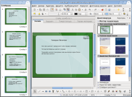

OpenOffice.org 2 - ImpressТаны үзүүлэн, танилцуулгыг илүү илэрхийлнэ ҮЗҮҮЛЭГЧ нь мултимедиагийн үзүүлэн харуулах онцгой чанарууд, хөдөлгөөнжүүлэх, зурах тоногууд гэх нийтлэг хэрэгслийг бүгдийг агуулна. ҮЗҮҮЛЭГЧ нь мультимедиа үзүүлэн танилцуулга бэлтгэх үнэхээр гайхалтай багаж. Таны үзүүлэн 2D, 3D ба тусгай эффект болон хөдөлгөөн агуулах боломжтойн дээр маш хэрэгтэй дүрслэлийн багажуудаар боловсруулагдана. Мастер слайд таны материалаа бэлтгэх үйл ажиллагааг хялбаршуулна. Олон янзын харагдац - Бүдүүвч, Слайд, Тэмдэглэл, Тараах материал зэрэг нь олон нийтийн болон илтгэл тавигчын шаардлагыг хангана. Мөн нэгэн нэмэлт харагдац нь танд гараараа эмхлэх боломж олгоно. ҮЗҮҮЛЭГЧ нь таны үзүүлэнг сайхан харагдуулахын тулд өргөн хүрээний, хэрэглэхэд хялбар дүрслэл болон диаграмм-г санал болгоно. Слайд шилжилт ба эффект нь таны үзүүлэн танилцуулгыг амьдруулна. "Фонтворк"-н тусламжтайгаар та бичвэртээ 2 ба 3 хэмжээст эффект оруулж, жинхэнэ амьд мэт 3 хэмжээст зураг үүсгэх боломжтой. Та баримтуудаа ОпенДокумент (OpenDocument) форматаар хадгалах хэрэгтэй. Учир нь энэ формат албан баримтын олон улсын шинэ стандарт билээ. Энэ XML-д суурилсан энэ формат нь зөвхөн ҮЗҮҮЛЭГЧ-тэй холбоотой бус та бусад бүх ОпенДокумент форматтай нийцтэй програм хангамжуудаар хандах боломжтой болох юм. ҮЗҮҮЛЭГЧЭЭР та мэдээж цаг үргэлж Майкрософт Поверпойнт үзүүлэн нээж засварлаж Майкрософт хэрэглэгчид цааш дамжуулахын тулд тэр форматаар нь хадгалах боломжтой. Мөн түүний хажуугаар та ҮЗҮҮЛЭГЧИЙН флаш үүсгэгч функцээр өөрийн үзүүлэнгtээр флаш файл (.swf) үүсгэж болно.
|
{kind=link}